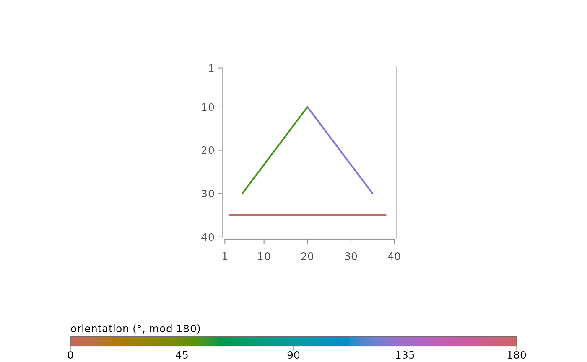
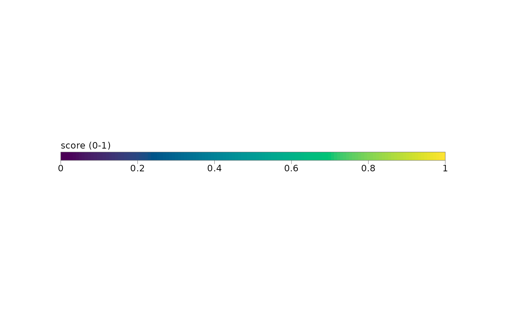

Draws a colour bar that fills the current figure region, for use in a [graphics::layout()] row or column beside panels drawn with `legend = FALSE`. One key can then serve several panels that share a scale, and the key never takes room from the data region of a panel. The key is drawn in fixed physical sizes (text at `cex`, a bar about 0.12 inch thick), so it reads the same in a wide figure and in a narrow phone copy of it; give it a strip about 0.5 inch tall (horizontal) or 1 inch wide (vertical), for example `layout(..., heights = c(1, lcm(1.3)))`.
Usage
colour_key(x, ...)
# Default S3 method
colour_key(
x,
limits,
label = NULL,
horizontal = TRUE,
ticks = NULL,
mark = NULL,
mark_label = NULL,
cyclic = FALSE,
glyphs = FALSE,
cex = 0.8,
...
)
# S3 method for class 'mlv_drawing'
colour_key(x, property, palette = NULL, zlim = NULL, ...)
# S3 method for class 'mlv_mat'
colour_key(x, what = "flux", zlim = NULL, col = NULL, ...)Arguments
- x
A character vector of at least two colours, or a palette function of the number of colours (default method); a drawing (drawing method).
- ...
Passed to methods.
- limits
Two increasing finite numbers: the values of the first and last colour.
- label
The quantity and its unit, for example `"length (px)"`.
- horizontal
Draw the bar horizontally (default) or vertically.
- ticks
Tick positions; defaults to [pretty()] values within `limits`, or five equally spaced values for a cyclic key.
- mark
Optional value marked with a heavier tick across the bar, such as a threshold, and `mark_label` its label.
- mark_label
Label for `mark`.
- cyclic
Treat the scale as cyclic, as for axial orientation: the colours wrap so that both ends share the first colour.
- glyphs
Draw a short line at each tick at the angle given by the tick value in degrees (counterclockwise, as drawn on screen). Useful for orientation keys.
- cex
Text size.
- property
For drawings: `"orientation"`, `"length"`, `"curvature"` or a mapped medial-axis score, as in [plot.mlv_drawing()].
- palette, zlim
As in [plot.mlv_drawing()].
- what
For a medial-axis representation: the continuous stage (`"distance"`, `"flux"` or a branch score), as in [plot.mlv_mat()]. The flux key marks the skeleton threshold.
- col
For a medial-axis representation: colours replacing the default palette, as in [plot.mlv_mat()].
Details
The default method takes the colours and limits directly. The method for drawings derives them exactly as [plot.mlv_drawing()] does for the same `property`, `palette` and `zlim`, so a panel drawn with `legend = FALSE` and its key always agree.
The function opens a new plot (it calls [graphics::plot.new()]) and changes no persistent graphics parameter.
Examples
roof <- rbind(c(5, 30, 20, 10), c(20, 10, 35, 30))
d <- mlv_drawing(list(roof, rbind(c(2, 35, 38, 35))), 40, 40)
op <- par(no.readonly = TRUE)
layout(matrix(1:2), heights = c(1, lcm(1.3)))
plot(d, property = "orientation", legend = FALSE, lwd = 2)
colour_key(d, "orientation")

par(op)
colour_key(grDevices::hcl.colors(64, "Viridis"), c(0, 1), "score (0-1)")
